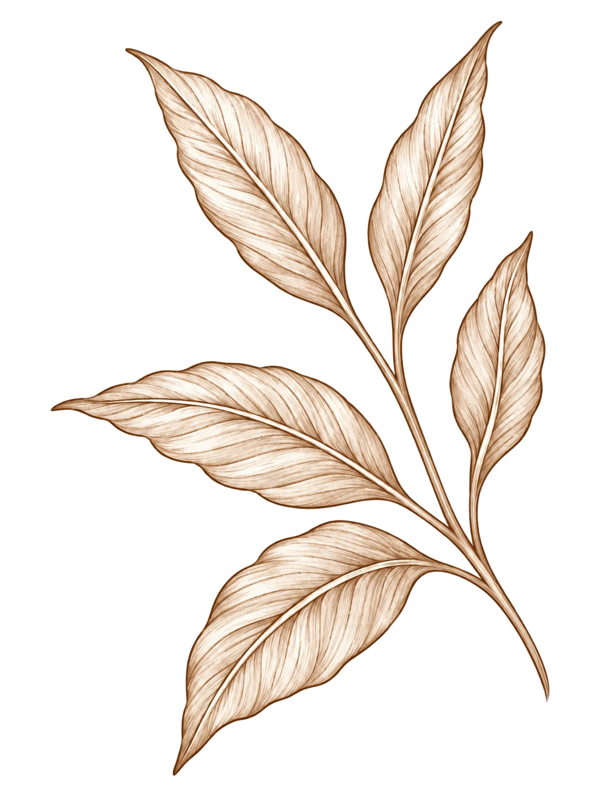
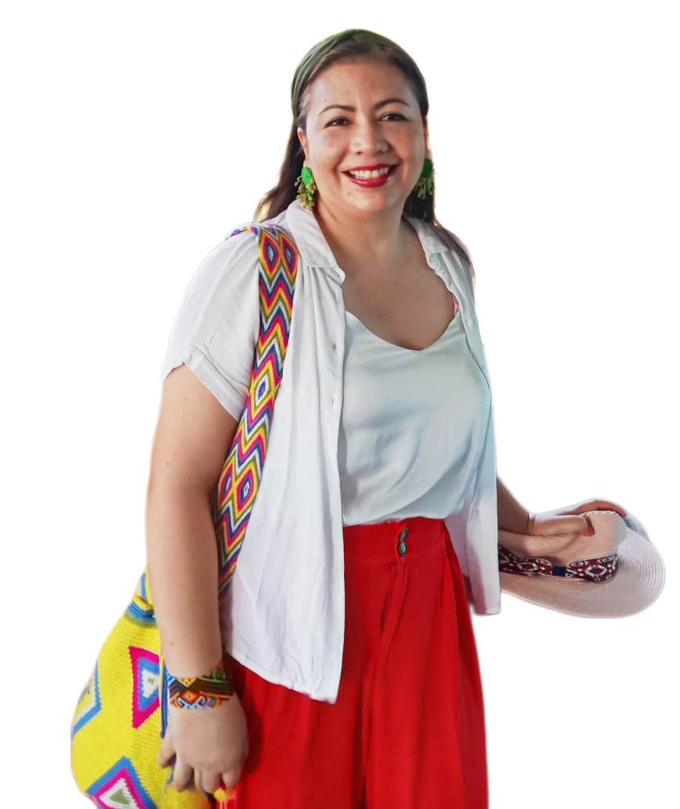
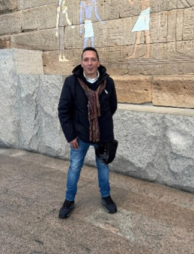

01

SABORES QUE PRESERVAN NUESTRO TERRITORIO
GASTROPATRIMONIO
Cultura, conocimiento e identidad
de la gastronomía colombiana.

Patrimonio
02
Investigación
gastronómica
03
Comunidad
y territorio
04
Divulgación
del conocimiento
.webp)
NUESTRO PROPÓSITO
UN ESPACIO DE ENCUENTRO
UN ESPACIO DE ENCUENTRO
ENTRE CULTURA, TERRITORIO
Y GASTRONOMÍA
GASTROPATRIMONIO es un seminario y espacio de investigación de la Fundación Universitaria San Mateo, donde se articulan la cultura, el territorio, la memoria y la gastronomía colombiana, como ejes para la generación de conocimiento, diálogo académico y proyección social.
Conoce más
“
La
comida
también
cuenta
quiénes somos.
EXPLORA GASTROPATRIMONIO
ACCEDE RÁPIDAMENTE
.webp)
.webp)
.webp)
.webp)
Nuestro equipo
Personas que investigan y preservan el patrimonio
Conoce a los investigadores que impulsan GastroPatrimonio.
Alvelayis Nieto Mejía
Líder del grupo
Ver perfil ↗
Alejandra María Rodríguez Guarín
Docente e investigadora
Ver perfil ↗
Orlando Rodríguez Argaes
Investigador
Ver perfil ↗Producción académica
Ver todas las publicaciones
Publicaciones destacadas
Libros y capítulos que documentan saberes, memorias y territorios gastronómicos.
 SOSQUUA
REVISTA DESTACADAVOL. 7 · NÚM. 2 · 2025
Sosquua
Revista semestral especializada en gastronomía: investigación, memoria, territorio y patrimonio alimentario en diálogo.
GastronomíaTerritorioPatrimonio
Explorar el último número ↗
SOSQUUA
REVISTA DESTACADAVOL. 7 · NÚM. 2 · 2025
Sosquua
Revista semestral especializada en gastronomía: investigación, memoria, territorio y patrimonio alimentario en diálogo.
GastronomíaTerritorioPatrimonio
Explorar el último número ↗
02 / 05

2023 · LIBRO
Cacao, sabores y tradición
Consultar en PALMA ↗
2023 · LIBRO
Tesoros líquidos de Colombia
Consultar en PALMA ↗
2020 · LIBRO
El turismo gastronómico sostenible: Ruta Bochica
Consultar en PALMA ↗
2019 · LIBRO
Ambientes de aprendizaje para la formación del profesional gastrónomo
Consultar en PALMA ↗
2020 · LIBRO